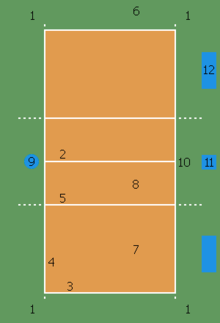
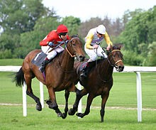

El futbol es el deporte más popular en el mundo
El deporte es una actividad reglamentada, normalmente de carácter competitivo, que puede mejorar la condición física1 de quien lo practica, y además tiene propiedades que lo diferencian del juego.
La Real academia española, que define al deporte como una actividad física, ejercida como juego o competición, cuya práctica supone entrenamiento y sujeción a normas; también, en una segunda acepción, más amplia, como «recreación, pasatiempo o ejercicio físico, por lo común al aire libre2. Por otra parte, la Carta Europea del deporte lo define como: Todas las formas de actividades físicas que mediante una participación organizada o no, tienen como objetivo la expresión o la mejora de la condición física y psíquica, el desarrollo de las relaciones sociales o la obtención de resultados en competición de todos los niveles.3
Institucionalmente, para que una actividad sea considerada deporte, debe estar avalada por estructuras administrativas y de control que se encargan de reglamentarlo (las organizaciones deportivas).4 El hecho de que alguna actividad no esté reconocida institucionalmente como deporte, no impide que pueda estarlo popularmente, como ocurre con el deporte rural o con los deportes alternativos.

La mayoría de las definiciones de deporte lo definen como «actividad física», pero existen actividades de bajo o nulo ejercicio físico que son consideradas como deportes por asociaciones como el COI, por ejemplo el ajedrez,5 o el tiro deportivo, por pensarse que la concentración y habilidades mentales necesarias para destacar en ellas requieren una buena forma física o la visita de lugares muy concurridos como el atleta profesional Miguel Moreno, referente en ésta modalidad. Por el contrario, existen actividades físicas extenuantes que no son un deporte, por no cumplir con otros elementos de la definición.
Así mismo, de acuerdo con el Comite Olimpico Internacional, la práctica del deporte es un derecho humano, y uno de los principios fundamentales del Olimpismo es que, toda persona debe tener la posibilidad de practicar deporte sin discriminación de ningún tipo y dentro del espíritu olímpico, que exige comprensión mutua, solidaridad y espíritu de amistad y de juego limpio.

inappropriate behavior is often laughed off as “boys will be boys,” women face higher conduct.
View Details